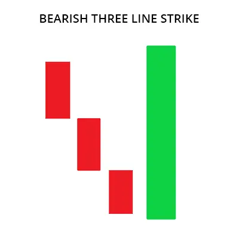
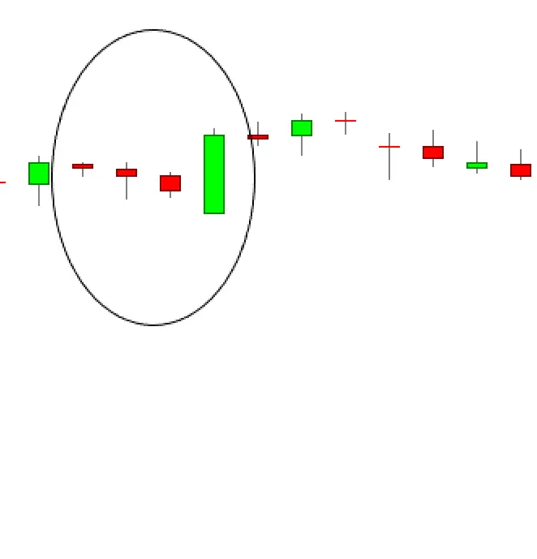

The bearish three-line strike candlestick pattern is another well-performing candle for the few samples I uncovered. Out of over 4.7 million candle lines searched, I found just 85 of them. Thus, the statistics and conclusions drawn from those numbers may change with additional samples. Often, the best performing candles are those that you can't find (they don't occur frequently), and since you can't find them, reliable testing is impossible. Drawing conclusions from what appears to be top-rated performance is risky and should be avoided. In other words, this candle doesn't perform as well as the numbers suggest.
The bearish three-line strike is supposed to be a bearish continuation pattern, but testing shows that it acts as a bullish reversal 84% of the time. That places its performance rank at 2, where 1 is the best performing. Overall performance ranks first, too, meaning that once the trend reverses, it tends to continue trending.
| Bearish Three-Line Strike Candlestick: Important Results |
Theoretical performance: Bearish continuation.
Tested performance: Bullish reversal 84% of the time
Frequency rank: 94
Overall performance rank: 1
Best percentage meeting price target: 80% (bull market, down breakout)
Best average move in 10 days: -8.81% (bull market, down breakout)
Best 10-day performance rank: 1 (bull market, down breakout)
All ranks are out of 103 candlestick patterns with the top performer ranking 1. "Best" means the highest rated of the four combinations of bull/bear market, up/down breakouts.

| Bearish Three Line Strike Example |

| How to Trade the Bearish Three Line Strike |
Let’s now take a closer look at how you could go about to trade a bearish three line strike. Apart from what many believe, you cannot just act on single candlestick patterns without additional confirmation. Most patterns simply aren’t accurate enough to be traded on their own.
Instead, you need to find filters and conditions that succeed to rule out a lot of the losing trades you would have taken otherwise.